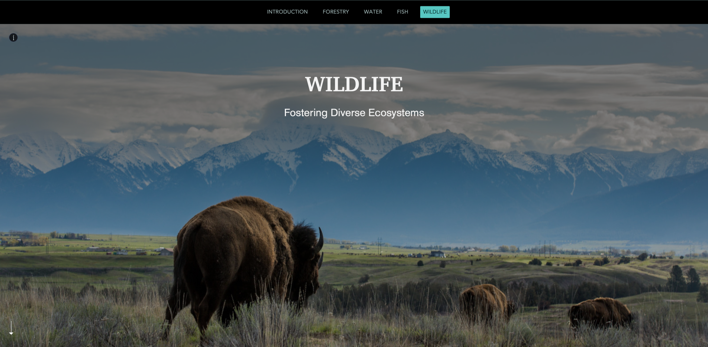

Lab 4: Exploring ArcGIS StoryMaps

Description
A core purpose of maps is to help tell a story — a story that engages space or geography in a meaningful way, a story grounded in place. ESRI ArcGIS StoryMaps allow the cartographer to guide a reader through a map, building a story from map elements and weaving in other media, including photographs, video, and audio. There are many examples of engaging StoryMaps, including wildfire briefings, ecological restoration, Native languages, climate change, and many others.
In this lab, you will get an introduction to ArcGIS StoryMaps, and move through the steps required to create your own StoryMap, including preparing data, uploading it to ArcGIS Online, creating a StoryMap, and adding design elements. As you move through the tutorials, take note of specific design elements that you like and that might be appropriate for the StoryMap you are developing for your final project. Be sure to check out the Anatomy of a Story StoryMap cheat sheet for great tips.
Requirements
Part 1: Get started with ArcGIS StoryMaps (30 minutes)
Your first task is to complete the Get started with ArcGIS StoryMaps tutorial. This will introduce you to the elements of an ArcGIS StoryMap, and get you comfortable with working in ArcGIS Online and the StoryMap Builder.
In the last step, Publish and Share, please share your map with the Applications of GIS — Spring 2024 group that you should already be a member of.
Sharing your results or discoveries is essential for demonstrating the value of any research effort. But communication can be tricky, especially if you’re trying to connect with people who aren’t experts in your area of study. The key to success is keeping your audience interested from start to finish. In this tutorial, you’ll use the ArcGIS StoryMaps builder to tell the story of a National Geographic expedition undertaken by three researchers. The combination of text, images, and maps creates a multimedia experience that is entertaining to read. You’ll start by looking at a great example: a story about an expedition in Guatemala. Then, you’ll use that as reference point to learn how to use ArcGIS StoryMaps.
Part 2: Map the impact of housing shortage on oil workers (90 minutes)
Now it is time to dive in a bit more. Complete the Map the impact of housing shortage on oil workers tutorial. This tutorial will require you to gather and prepare data on homelessness, publish those data on ArcGIS Online, create a series of web maps for use in your StoryMap, and share the results through an ArcGIS StoryMap.
From 2012 to 2013, North Dakota’s oil boom attracted thousands of new workers from across the continent seeking well-paying jobs. The state was historically not a densely populated area and did not have enough permanent or even temporary housing to accommodate the rapid influx of workers. As a result, the state experienced a rapid increase in the unhoused population, prompting the local government to reevaluate resource allocation and seek funding opportunities to support the growing vulnerable community. In this tutorial, you’re a GIS specialist documenting the crisis so government officials can prioritize resources to support people experiencing homelessness.
The final step is to publish your story. In the final step, please set your sharing level to “Organization” and share your map with the Applications of GIS — Spring 2024 group that you should already be a member of.
Deliverables
You are responsible for posting StoryMaps from each part of the lab on ArcGIS Online and sharing them with the Applications of GIS — Spring 2024 group. These are together worth 100 points and will be graded as pass/fail. Do the tutorials, post the stories, and you will receive full credit.
Due Dates
Your StoryMaps are must be posted on ArcGIS Online and shared with the Applications of GIS — Spring 2024 group by one week after your lab session. StoryMaps are due by 2:00 PM Mountain Time.
Here is a table of due dates:
| Wednesday Section | Thursday Section | |
|---|---|---|
| Lab 4 | April 3 | April 4 |